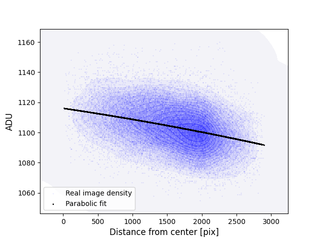
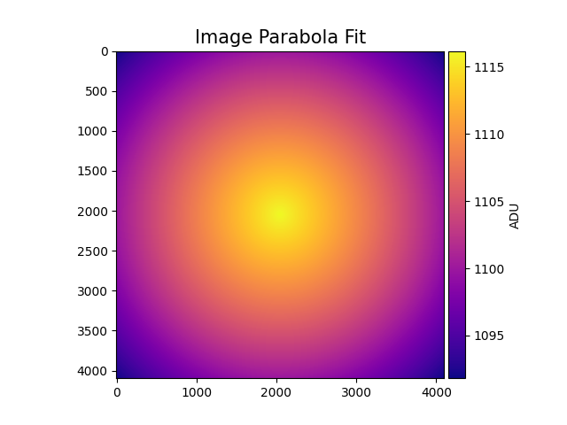
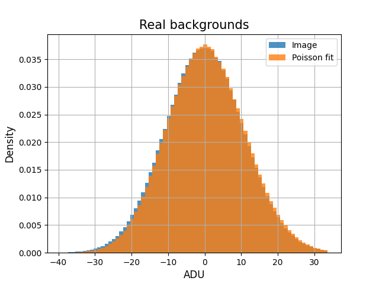
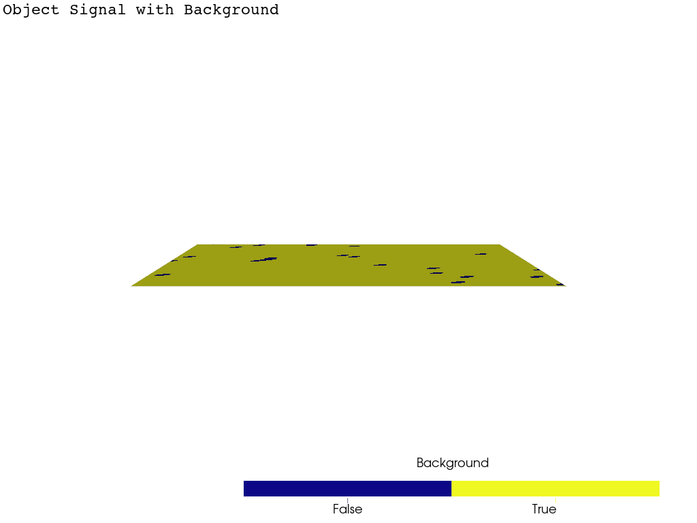

Note
Go to the end to download the full example code.
Background Shape#
Inspecting the shape of the background in a POGS CCD image
import matplotlib.pyplot as plt
import numpy as np
import pyvista as pv
import seaborn as sns
Loading a fits image from the Purdue Optical Ground Station
from astropy.io import fits
import mirage as mr
import mirage.vis as mrv
Defining functions that compute the background of a CCD image
Loading the CCD image
with fits.open(
'/Users/liamrobinson/Library/CloudStorage/OneDrive-purdue.edu/pogs/single_examples/00147425.fit'
) as hdul:
ccd_adu = hdul[0].data
Plotting the background values as a function of the distance from the center of the image
br_mask_naive, _ = mr.image_background_naive(ccd_adu)
im_center = np.array(ccd_adu.shape) / 2
x_pix, y_pix = np.meshgrid(np.arange(ccd_adu.shape[1]), np.arange(ccd_adu.shape[0]))
r_dist = np.sqrt((x_pix - im_center[0]) ** 2 + (y_pix - im_center[1]) ** 2)
mr.tic('Parabola estimation')
im_br_parabola = mr.image_background_parabola(ccd_adu)
mr.toc()
x = r_dist[br_mask_naive][::1000]
y_real = ccd_adu[br_mask_naive][::1000]
y_parabola = im_br_parabola[br_mask_naive][::1000]
cmap = sns.color_palette('light:b', as_cmap=True)
sns.kdeplot(
x=x,
y=y_real,
fill=True,
thresh=0,
levels=15,
alpha=0.5,
cmap=cmap,
)
plt.scatter(x, y_real, s=0.3, label='Real image density', alpha=0.1, color='b')
plt.scatter(x, y_parabola, s=1, label='Parabolic fit', color='k')
mrv.texit('', 'Distance from center [pix]', 'ADU', grid=False)
plt.legend()
plt.show()

Parabola estimation: 1.10e-02 seconds
Plotting the parabolic fit to the background
plt.imshow(im_br_parabola, cmap='plasma')
mrv.texit('Image Parabola Fit', '', '', grid=False)
plt.colorbar(cax=mrv.get_cbar_ax(), label='ADU')
plt.show()

Plotting the residual noise after accounting for the image background, compared to a Poisson fit
ccd_minus_br = ccd_adu - im_br_parabola
real_br_mask, _ = mr.image_background_naive(ccd_minus_br)
ccd_minus_br_masked = ccd_minus_br[real_br_mask][::10]
residual_var = np.var(ccd_minus_br_masked)
print(f'Residual variance: {residual_var} [ADU^2]]')
hist_kwargs = dict(
bins=np.arange(np.min(ccd_minus_br_masked), np.max(ccd_minus_br_masked)),
density=True,
alpha=0.8,
)
plt.hist(ccd_minus_br_masked, **hist_kwargs)
plt.hist(
np.random.poisson(residual_var, size=ccd_minus_br_masked.size) - residual_var,
**hist_kwargs,
)
mrv.texit('Real backgrounds', 'ADU', 'Density', ['Image', 'Poisson fit'])
plt.show()

Residual variance: 114.29810870073597 [ADU^2]]
obj_pos = 1286, 1897
lims = [[obj_pos[0] - 15, obj_pos[0] + 15], [obj_pos[1] - 15, obj_pos[1] + 15]]
x, y = np.meshgrid(
np.arange(lims[0][1] - lims[0][0]), np.arange(lims[1][1] - lims[1][0])
)
grid = pv.StructuredGrid(
x, y, ccd_adu[lims[1][0] : lims[1][1], lims[0][0] : lims[0][1]] / 300
)
br_grid = pv.StructuredGrid(
x, y, im_br_parabola[lims[1][0] : lims[1][1], lims[0][0] : lims[0][1]] / 300
)
pl = pv.Plotter()
pl.add_mesh(
grid,
scalars=ccd_minus_br[lims[1][0] : lims[1][1], lims[0][0] : lims[0][1]].flatten(
order='f'
)
< 20,
cmap='plasma',
scalar_bar_args=dict(title='Background'),
)
pl.add_text(
'Object Signal with Background',
font_size=12,
font='courier',
position='upper_left',
color='k',
)
mrv.orbit_plotter(pl, frames=120, shift=10)

/Users/liamrobinson/Documents/maintained-research/mirage/.venv/lib/python3.11/site-packages/pyvista/core/utilities/points.py:52: UserWarning: Points is not a float type. This can cause issues when transforming or applying filters. Casting to ``np.float32``. Disable this by passing ``force_float=False``.
warnings.warn(
Total running time of the script: (0 minutes 14.718 seconds)